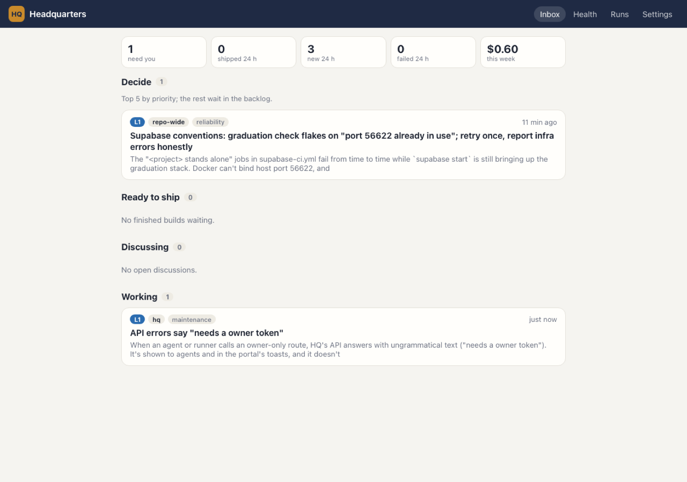
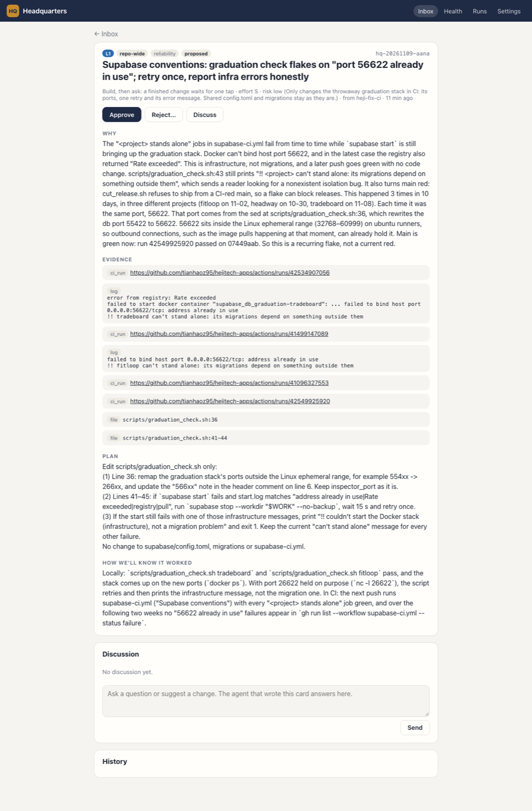
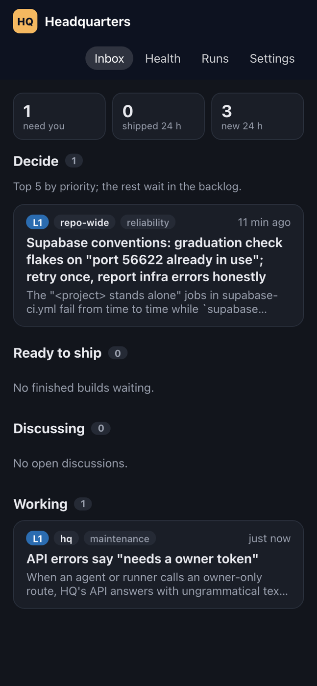
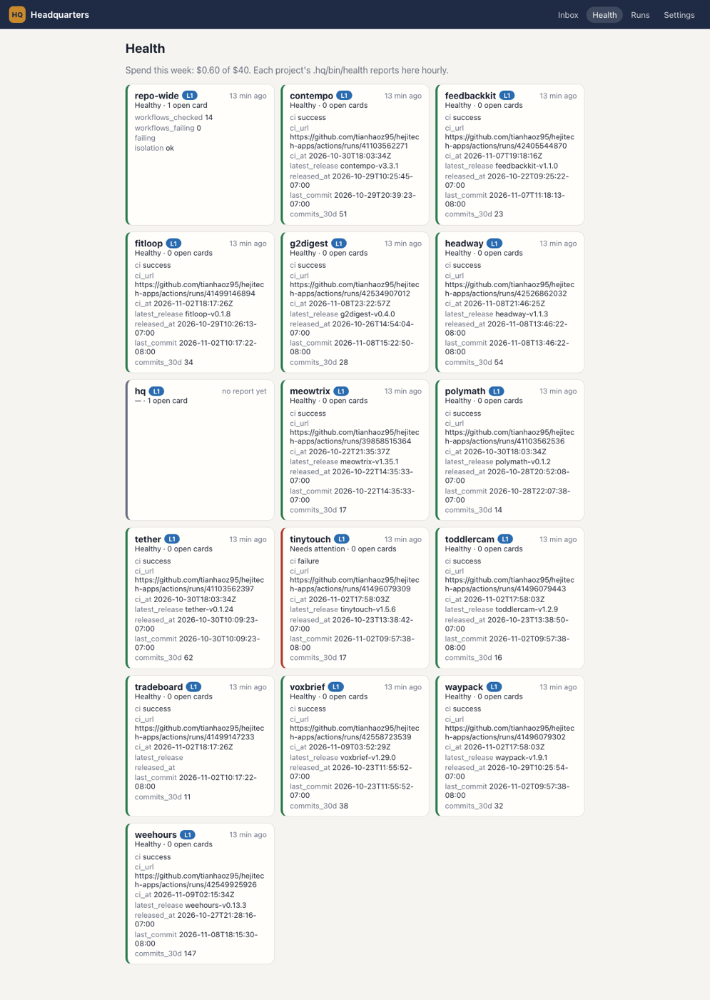
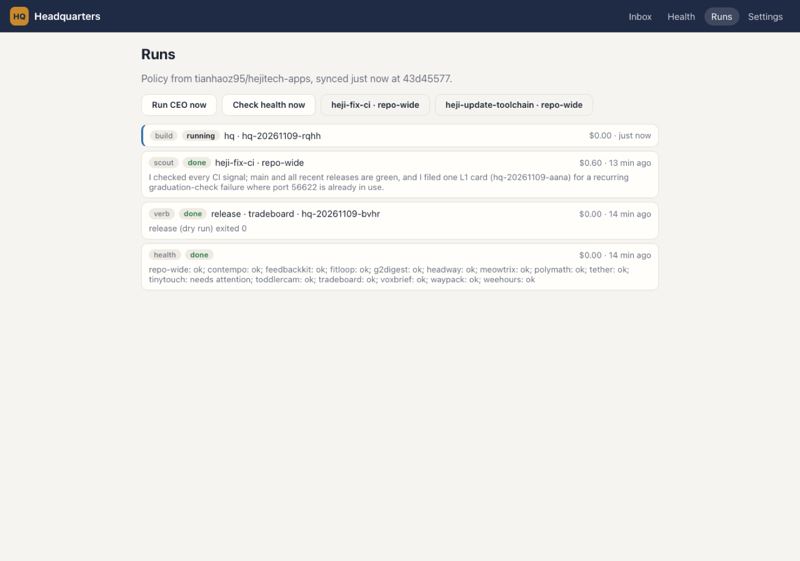
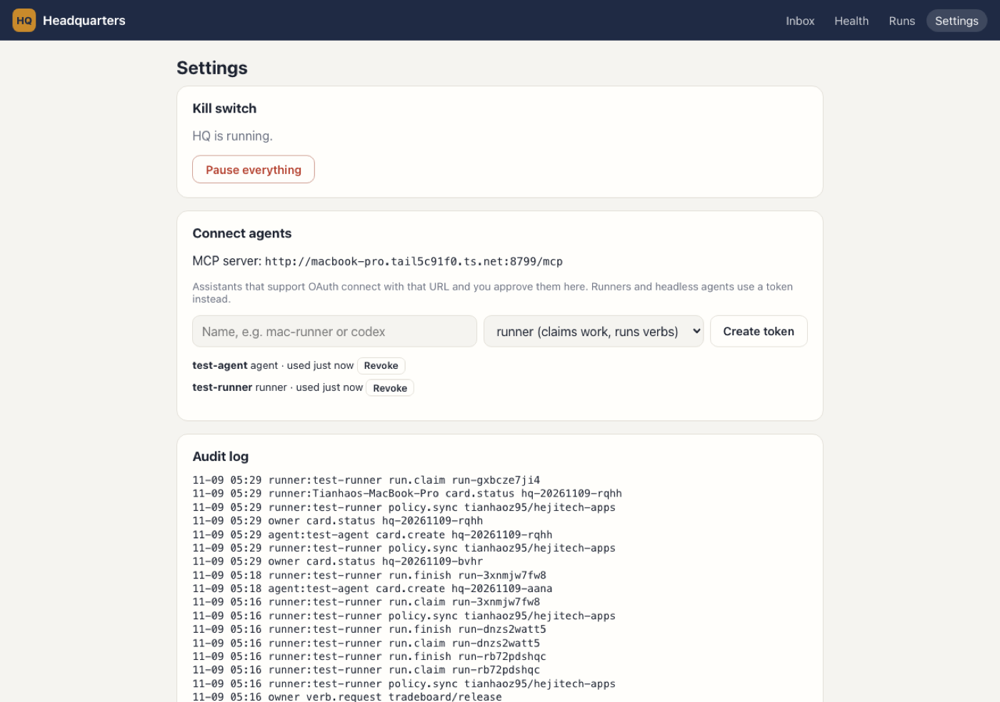
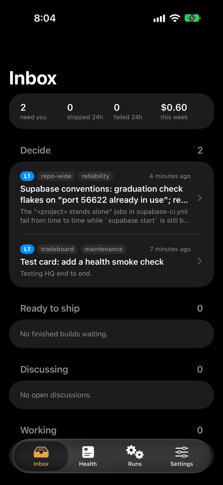
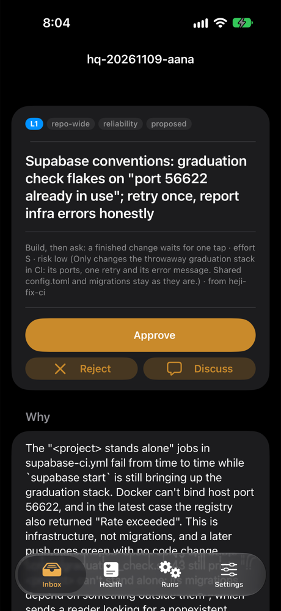
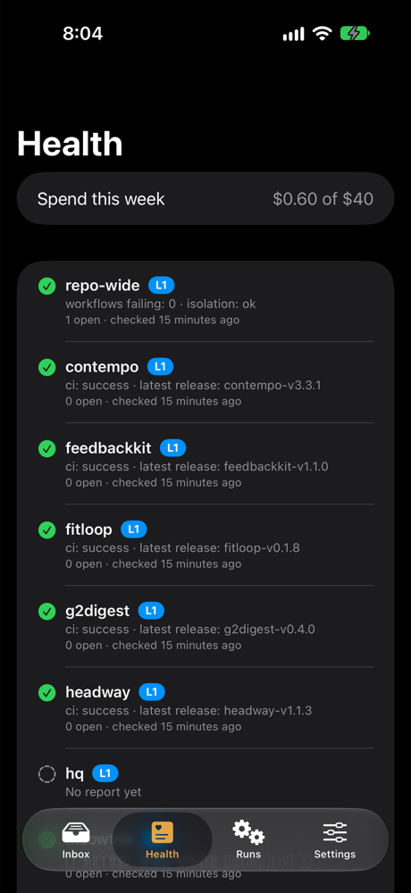

Build report · 2026-11-08 · HQ v0.1
HQ v0.1 is built and running on this Mac
Everything in the PRD's phases 1–4 exists and works end to end on a local stack: the Worker (portal, API, MCP server, scheduler), the hq CLI and runner, the iPhone app, and .hq/ folders for the repo and all 15 projects. Two real Claude Code runs went through it: a scout filed a genuine reliability card for $0.60, and an executor built, tested and committed an approved fix for $0.67, then a second agent reviewed it. Nothing is pushed or deployed: it's all on the local branch hq/initial.
Verified
- Guardrails refuse what they should: cards without evidence, above the tier ceiling, for unknown projects or verbs; agents approving, shipping or running L3 verbs (
projects/hq/scripts/test-api.mjs). - A real scout (
heji-fix-ci, headless) filed a card about a recurringsupabase-ci.ymlflake with 8 pieces of evidence. - A real build: approved card → worktree → fix + test → independent
verifyverb → reviewer agent. - Portability: HQ runs a fixture repo it has never seen, and a CI check proves HQ's code names no project.
Not verified
- The iPhone app on your iPhone 13: codesign needs a person to allow keychain access.
- Production: no Cloudflare deploy, so the hourly cron and OAuth over HTTPS weren't run live.
- Agents other than Claude Code: no Antigravity or Codex CLI on this Mac; their adapter is a template.
What you'll see
Screenshots of the running build against the local Worker, with the real cards from the runs in §3. The portal and the app read the same API.
Web portal




.hq/bin/health. TinyTouch's CI on main really is failing.

iPhone app (simulator)



The real runs
Both ran through the runner on this Mac with Claude Code headless, an agent token for the MCP server, and the deny-list (no push, merge, release, deploy, secrets).
The scout's card (waiting for you)
"Supabase conventions: graduation check flakes on port 56622 already in use" (L1, repo-wide). It found the <project> stands alone jobs in supabase-ci.yml fail intermittently because scripts/graduation_check.sh remaps the throwaway stack's database to port 56622, inside the Linux ephemeral range, so an outbound connection can already hold it. It happened 3 times in 10 days (fitloop 11-02, headway 10-30, tradeboard 11-08), and the script then blames migrations. The plan moves the ports out of the ephemeral range and retries once on infrastructure errors. It's a real proposal: approve or reject it yourself.
The build loop (a fix to HQ itself)
To exercise approve → build → review, I filed a small real bug I'd noticed (the API said "needs a owner token") as an L1 card and approved it on this dev instance. The executor:
- Got a fresh worktree on branch
hq/hq-20261109-rqhh(fromhq/initial); the repo'ssetupverb rannpm ciin it. - Added assertions to the integration test, showed them failing, fixed
need()inapi.ts, got 18/18, committedc330b869(2 files, +16 −3). - Attached its evidence through MCP. The runner then ran
.hq/bin/verifyitself (typecheck + tests, exit 0) and queued the reviewer.
It also reported, unprompted, that its pkill -f "wrangler dev" had killed my dev Worker for a minute. That's now blocked (§5).
What's in the branch
| Part | Where | What it does |
|---|---|---|
| Contracts | projects/hq/packages/core | Card schema + lifecycle (who may move a card where), HQ.md policy merge, tiers, verb checks, budget, schedules, get_context. |
| Worker | projects/hq/services/web | D1 store, R2 for screenshots, the owner's portal, REST API, MCP server (9 tools; HQ tokens or OAuth), hourly cron. Every rule is enforced in store.ts. |
| CLI + runner | projects/hq/apps/cli | hq lint | policy | sync | context | verb | runner | init. The runner claims runs, starts agents through adapters, and holds the credentials. |
| iPhone app | projects/hq/apps/ios | SwiftUI: inbox, card, health, runs, settings, kill switch, background digest notification. |
| Repo side | .hq/, projects/*/.hq/ | Root policy (repo, ceiling L1, $40/week, scouts) + lib/ helpers; per project health, verify (where npm tests exist), release (wraps cut_release.sh, L3). |
| Skills | heji-fix-ci, heji-update-toolchain | A "Headless mode (HQ scout)" section: same investigation, cards instead of a review site. |
| CI | .github/workflows/hq-ci.yml | Typecheck, tests, build, coupling check, hq lint, Worker integration on a fresh D1, iOS simulator build. |
| Docs | projects/hq/{CLAUDE,README}.md, docs/ | Commands, architecture, pitfalls, decisions, deploy steps. Root CLAUDE.md points agents at HQ; GRADUATION.md records HQ's exception. |
Tests and checks
npm run typecheck:hq && npm run test:hq && npm run build:hq
node projects/hq/scripts/check_coupling.mjs
npm run -s hq -- lint # all 16 .hq/ folders; --no-run skips the dry runs
Problems found while building (all fixed)
| Found by | Problem | Fix |
|---|---|---|
| Integration test | Your real release request was silently merged into an already-queued dry run of the same verb (run de-dup ignored arguments). | Verb runs de-dup by arguments; the test asserts three verb runs. |
| Coupling check | The agent deny-list named this repo's cut_release.sh, tying HQ to this repo. | Generic rule (no agent runs .hq/bin/release) plus HQ_DENY_TOOLS for repo-specific additions. |
| Running over Tailscale | Agent tokens were bound to PUBLIC_URL, so MCP failed at any other address. | HQ's own tokens are checked against D1 before the OAuth layer; OAuth stays for third-party clients. |
| The worker log | Claude Code polled GET /mcp in a loop because HQ answered 200. | GET answers 405, as the MCP Streamable HTTP spec expects. |
| The executor itself | It ran pkill -f "wrangler dev" and killed a server it didn't start. | pkill/killall denied to agents; the build prompt says to stop processes by PID. |
| First build | A fresh worktree has no node_modules, so verify would fail. | A repo-wide setup verb the runner calls in each new worktree. |
| iOS | ATS refuses plain HTTP to a raw Tailscale IP. | The app allows *.ts.net; use the MagicDNS name. |
Decisions I made for you
The PRD's open questions, answered with its proposed defaults or a safer one. All are a one-line change in .hq/HQ.md or the code; full list in projects/hq/docs/decisions.md.
| # | Question | Chosen |
|---|---|---|
| Q1 | Push branches and open PRs? | Off for now (push: false): builds stay on local hq/<card> branches, like heji-build-next. Set push: true to get PRs. |
| Q2 | New project ideas as cards? | Allowed (kind portfolio), never built unasked. No scout generates them yet. |
| Q3 | May HQ release? | No: every release verb is L3. You can dry-run and run it from a card. |
| Q4 | Weekly budget | $40. Scouts and the CEO pause at the cap; builds finish. |
| Q5 | Name | HQ. |
| Q6 | Store | Cloudflare D1 (+ R2), BACKEND=none: HQ never touches the shared Supabase project. |
| Q7 | Where the code lives | projects/hq/, written to move. |
| — | Tier ceilings | L1 everywhere: nothing auto-merges yet. Promotion to L0 is an HQ.md edit you approve. |
| — | Sign-in | One owner per deployment with an owner token (portal, app, MCP consent). Runners and headless agents use tokens you mint in Settings. |
| — | Inbox cap | At most 5 cards waiting for a decision at once; the CEO's ranking picks which. |
| — | Notifications | Local digest notification from background refresh; APNs push later. |
What's left for you
- Try it on your phonePortal URL and owner token are in the chat message; the token is in
projects/hq/services/web/.dev.vars. - Decide the scout's cardApprove to watch a real build, or reject with a reason.
- Look at the executor's fix and merge it into
hq/initialif you like itgit diff hq/initial hq/hq-20261109-rqhh - Install on your iPhone
cd projects/hq/apps/ios && xcodegen generate && open HQ.xcodeproj, run on the device, allow keychain access once. - Merge
hq/initialinto main and pushThen CI runshq-ci.yml. It's a new public project, so it's your call. - Deploy
projects/hq/docs/DEPLOY.md: D1 + R2 + owner secret,npm run deploy -w @hq/web, link Workers Builds. - Run the runner on this Mac for realWith production tokens; a launchd agent keeps it running.
- Look at TinyTouch's red CI on mainFound by the health verb.
Not in v0.1
- APNs push and a TestFlight workflow (needs the App Store Connect record for
com.hejitech.hq). - Tested adapters for Antigravity or Codex (only the command template).
- Taste learning beyond what the CEO prompt does: it reads recent decisions and may propose an
HQ.mdpolicy card, but there's no scout scoring or automatic tier promotion yet. - Moving the review-site hand-offs (§12 steps 3–5 of the PRD) into HQ.
Your notes
Questions, corrections, decisions. Saved in this browser. Copy summary puts the whole report, your ticks and these notes on the clipboard for any agent, in this session or a new one.
Report: reports/2026-11-08-hq-v0-1-build · serve with script/serve.sh